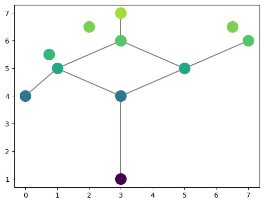
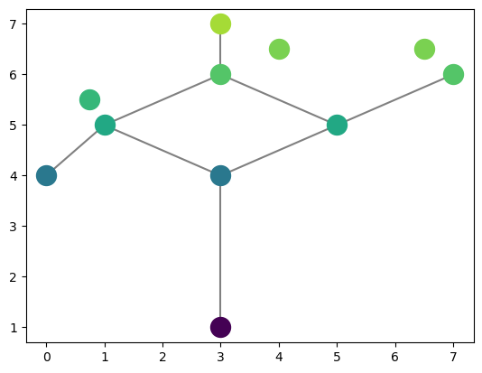
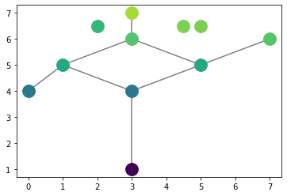

2. Juggling Man Example
This is the code used to generate the juggling man Reeb graph drawn on the front page. Maybe not exactly. Gonna want to update to have more examples.
[3]:
from cereeberus.data import graphs
from cereeberus.reeb.graph import Reeb
jm = graphs.juggling_man()
jm = Reeb(jm)
jm.plot_reeb()

[4]:
jm.pos
[4]:
{0: (3, 7),
1: (3, 6),
2: (1, 5),
3: (5, 5),
4: (7, 6),
5: (0, 4),
6: (3, 4),
7: (3, 1),
8: (6.5, 6.5),
9: (2, 6.5),
10: (0.75, 5.5)}
[5]:
jm.plot_reeb(position = {0: (3, 7),
1: (3, 6),
2: (1, 5),
3: (5, 5),
4: (7, 6),
5: (0, 4),
6: (3, 4),
7: (3, 1),
8: (6.5, 6.5),
9: (4, 6.5),
10: (0.75, 5.5)})

[4]:
jm.plot_reeb(position = {0: (3, 7),
1: (3, 6),
2: (1, 5),
3: (5, 5),
4: (7, 6),
5: (0, 4),
6: (3, 4),
7: (3, 1),
8: (4.5, 6.5),
9: (5, 6.5),
10: (2, 6.5)})

[6]:
import imageio
import os
filenames = []
for j in range(0,30):
for i in range(0, 3):
name = 'juggling_men/juggling_man' + str(i) + '.png'
filenames.append(name)
filenames.append(name)
filenames.append(name)
filenames.append(name)
filenames.append(name)
filenames.append(name)
filenames.append(name)
filenames.append(name)
filenames.append(name)
filenames.append(name)
# filenames
[9]:
images = []
for filename in filenames:
images.append(imageio.imread(filename))
imageio.mimsave('./juggling_man.gif', images)
<ipython-input-9-7fee0323f9a4>:3: DeprecationWarning: Starting with ImageIO v3 the behavior of this function will switch to that of iio.v3.imread. To keep the current behavior (and make this warning disappear) use `import imageio.v2 as imageio` or call `imageio.v2.imread` directly.
images.append(imageio.imread(filename))